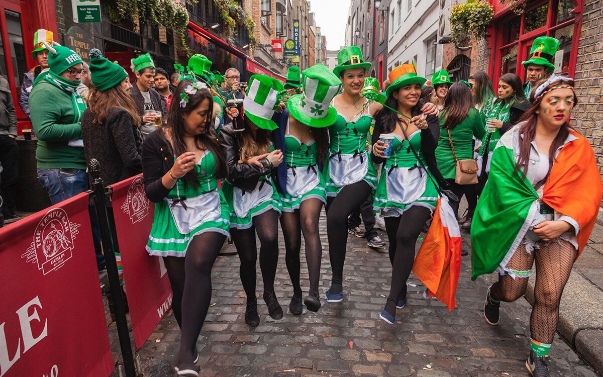
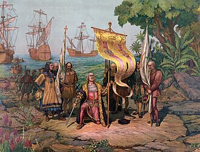
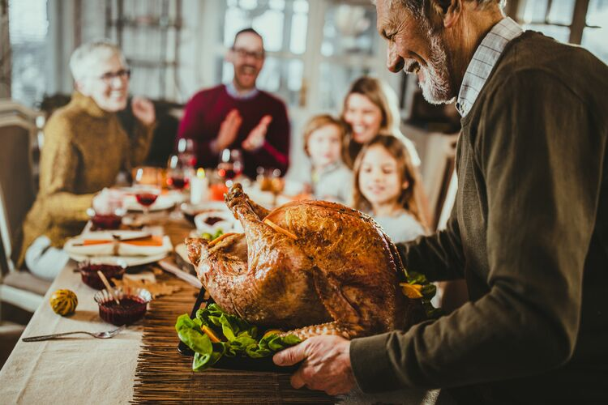

Holidays in the USA · Свята в СШАName:
New Year's Day
January 1Новий рік
New Year's Day is on January 1st. The party starts the night before, on New Year's Eve. Families and friends meet, eat tasty food and wait for midnight. In New York, about a million people watch a big shining ball drop in Times Square. When the clock strikes twelve, everyone shouts "Happy New Year!" and there are fireworks in the sky. Many people make New Year's resolutions — promises to do something better, like reading more or eating less candy.
1 Match the words з'єднай
1midnightaкричати
2fireworksbобіцянка
3Evecпівніч
4shoutdфеєрверк
5promiseeпереддень свята
1 2 3 4 5
2 Fill in the gaps
midnightfireworksresolutionEve
- December 31st is New Year's .
- The clock strikes twelve at .
- My is to read more books.
- We watch colourful in the sky.
3 True or False? обведи T або F
1New Year's Day is on December 31st.TF
2In New York, a big ball drops in Times Square.TF
3At midnight people shout "Merry Christmas!"TF
4A resolution is a promise to do something better.TF
4 Answer the questions
- When does the party start?
- How many people watch the ball drop in Times Square?
- What is your New Year's resolution? (your own answer)
Holidays in the USA · Свята в СШАName:
Presidents' Day
3rd Monday in FebruaryДень президентів
Presidents' Day is on the third Monday in February. On this day Americans remember their presidents, especially two great ones. George Washington was the first president of the USA. His birthday is on February 22nd. Abraham Lincoln was the 16th president. He helped to end slavery in America. You can see both men on American money: Washington is on the one-dollar bill and Lincoln is on the five-dollar bill. Many children don't go to school on this day, and shops have big sales.
1 Match the words з'єднай
1rememberaбанкнота
2presidentbрозпродаж
3billcвшановувати, пам'ятати
4saledдень народження
5birthdayeпрезидент
1 2 3 4 5
2 Who is it? W — Washington, L — Lincoln
He was the first president.
He was the 16th president.
He is on the five-dollar bill.
His birthday is on February 22nd.
He helped to end slavery.
3 Choose the right answer обведи a, b або c
1. Presidents' Day is in …a Januaryb Februaryc July
2. It is always on a …a Mondayb Fridayc Sunday
3. Washington is on the … bill.a one-dollarb five-dollarc ten-dollar
4 Answer the questions
- Who was the first president of the USA?
- What do shops have on Presidents' Day?
- Who is the president of Ukraine? (your own answer)
Holidays in the USA · Свята в СШАName:
St. Patrick's Day
March 17День святого Патрика

St. Patrick's Day is on March 17th. It is an Irish holiday, but Americans love it too. Saint Patrick lived in Ireland a long time ago. On this day people wear green clothes and green hats. If you don't wear green, someone can pinch you! The symbol of the holiday is the shamrock, a small plant with three leaves. Big cities have parades with music and dancing. In Chicago, people even make the river green!
1 Match the words з'єднай
1wearaпарад
2shamrockbлисток
3paradecщипати
4leafdносити (одяг)
5pincheтрилисник
1 2 3 4 5
2 Odd one out обведи зайве
greenhatshamrockturkey
parademusicchimneydancing
IrelandItalyIrishPatrick
Marchleafplantshamrock
3 True or False? обведи T або F
1St. Patrick's Day is on March 17th.TF
2It is a Mexican holiday.TF
3A shamrock has four leaves.TF
4In Chicago, people make the river green.TF
4 Answer the questions
- What colour do people wear on St. Patrick's Day?
- What can happen if you don't wear green?
- What is the symbol of the holiday?
Holidays in the USA · Свята в СШАName:
Columbus Day
2nd Monday in OctoberДень Колумба

Columbus Day is on the second Monday in October. On this day people remember Christopher Columbus, a sailor from Italy. In 1492 he sailed across the Atlantic Ocean with three ships: the Niña, the Pinta and the Santa María. He wanted to find a new way to India, but he found the islands of America. Today some people call this day Indigenous Peoples' Day. They remember the Native Americans who lived in America long before Columbus came.
1 Match the words з'єднай
1sailoraострів
2shipbзнайти
3islandcкорабель
4oceandморяк
5findeокеан
1 2 3 4 5
2 Numbers from the text
- Columbus sailed in .
- He had ships.
- Columbus Day is on the Monday in October.
- The first ship was called the .
3 Put the sentences in order пронумеруй 1–4
He found the islands of America.
Columbus wanted to find a new way to India.
Today we remember him on Columbus Day.
He sailed across the Atlantic Ocean with three ships.
4 Answer the questions
- Where was Columbus from?
- Where did he want to go?
- Who lived in America before Columbus came?
Holidays in the USA · Свята в СШАName:
Thanksgiving
4th Thursday in NovemberДень подяки

Thanksgiving is on the fourth Thursday in November. It is a big family holiday. People say "thank you" for the good things in their life: their family, friends, food and home. The first Thanksgiving was in 1621, when the Pilgrims and Native Americans shared a big dinner. Today families cook a big turkey with potatoes, corn and cranberry sauce. For dessert, they eat pumpkin pie. Many people also watch a big parade on TV and play or watch American football.
1 Match the words з'єднай
1turkeyaділитися
2sharebкукурудза
3pumpkincіндичка
4corndдесерт
5desserteгарбуз
1 2 3 4 5
2 Thanksgiving dinner познач їжу з тексту
3 Choose the right answer обведи a, b або c
1. Thanksgiving is in …a Octoberb Novemberc December
2. The first Thanksgiving was in …a 1492b 1621c 1776
3. On TV people watch …a a paradeb fireworksc a ball drop
4 Answer the questions
- Who shared the first Thanksgiving dinner?
- What do people eat for dessert?
- Finish the sentence: I am thankful for … (your own answer)
Holidays in the USA · Свята в СШАName:
Christmas
December 25Різдво
Christmas is on December 25th. It is the most popular holiday in the USA. Weeks before Christmas, families decorate a Christmas tree with lights and toys. Children write letters to Santa Claus. On Christmas Eve they hang stockings by the fireplace and leave milk and cookies for Santa. Children believe he comes down the chimney at night. In the morning they find presents under the tree. Families eat a big dinner together and sing Christmas songs called carols.
1 Find the word in the text
- a big sock for presents: s
- Christmas songs: c
- Santa comes down it: c
- gifts: p
- to make something beautiful: d
2 Fill in the gaps
treecookieslettersEve
- Children write to Santa.
- On Christmas they hang stockings.
- They leave milk and for Santa.
- Presents are under the .
3 True or False? обведи T або F
1Christmas is the most popular holiday in the USA.TF
2Families decorate the tree with lights and toys.TF
3Santa Claus comes in through the door.TF
4Children find their presents in the evening.TF
4 Answer the questions
- What do children leave for Santa?
- Where do children find their presents?
- How does your family celebrate Christmas? (your own answer)